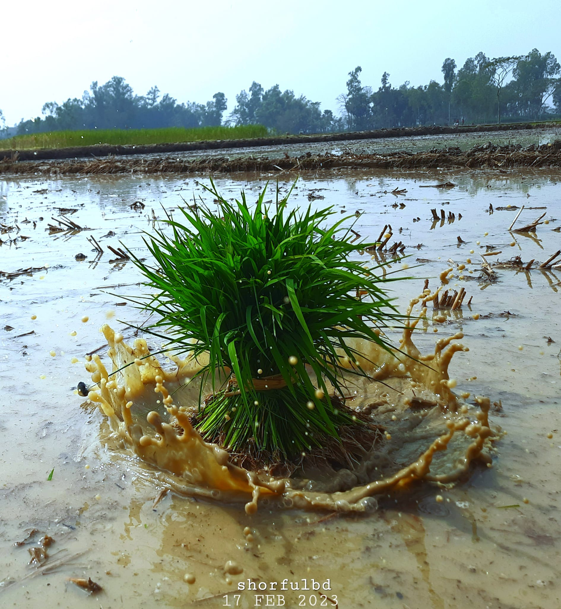
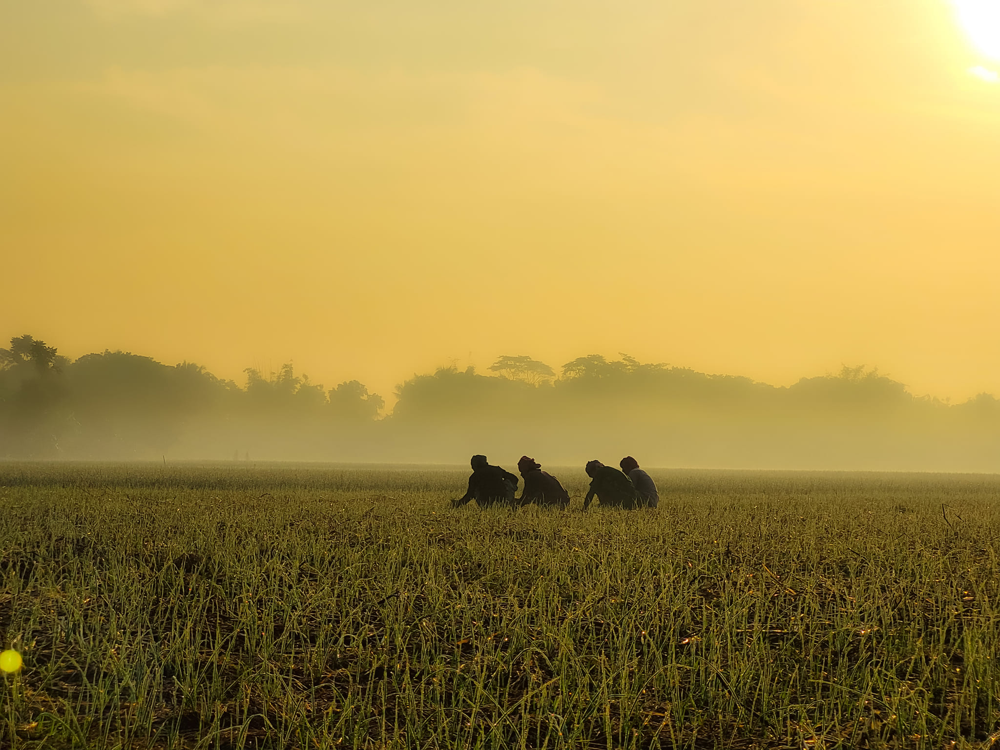
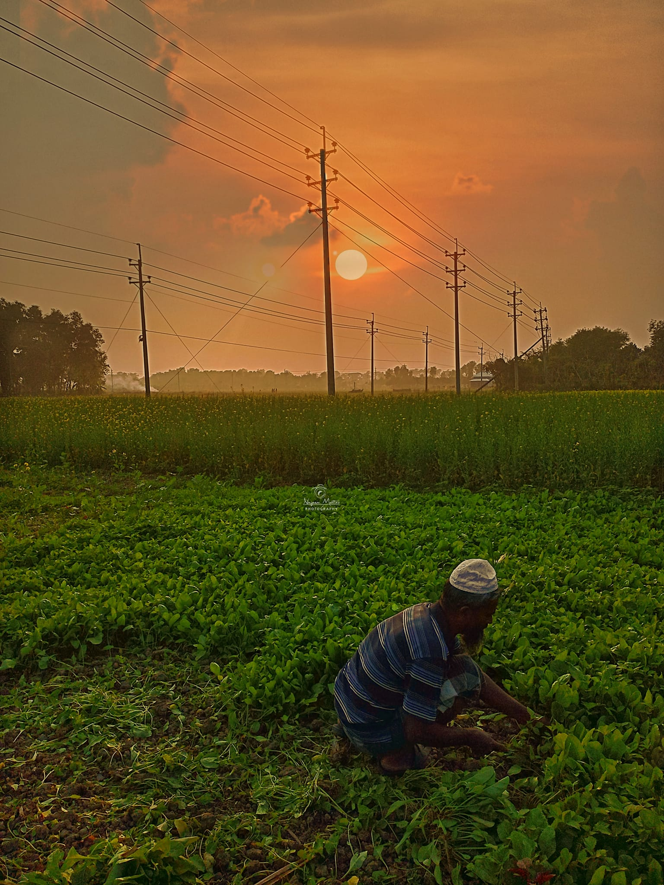
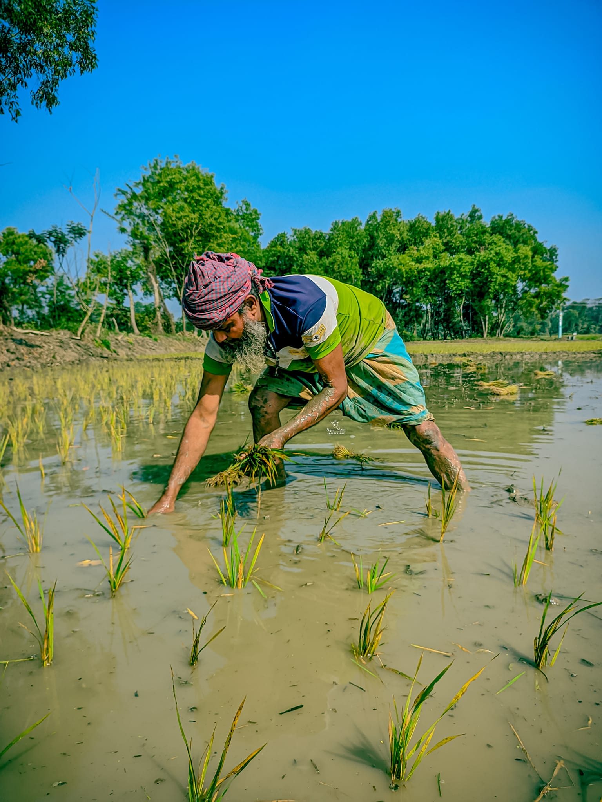
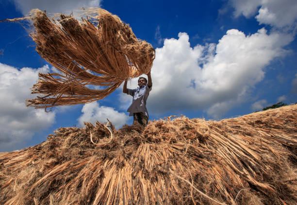
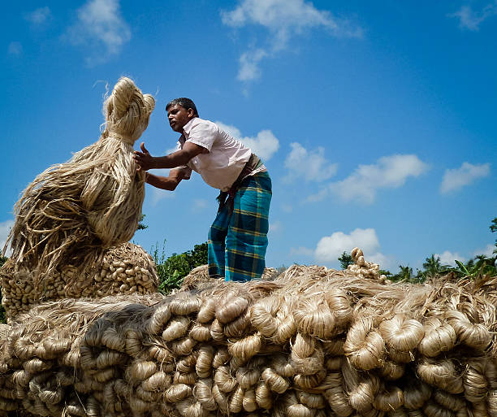

Explore Shariatpur for you the best local businesses and services in Shariatpur District





The main occupation of shariatpur district is Agriculture and agriculture laborer,Fisheries,Domastic Animal;
jointy near about 70% total cultiable land 8380 hectors
.Among this single crope 22.24%,double crope 50.12% and treble crope land is 27.64%.
he main crope are paddy,jute,onion,wheat,sweet potato .Main exparts are jute, onion ,garlic and tomato;
Agriculture is a
significant contributor to the district's gross domestic product (GDP).
The combined output of crops, livestock, and fisheries forms a substantial portion of Shariatpur's economic output.
While precise figures may vary,
agriculture typically accounts for a considerable share of both the district's and the country's GDP, reflecting its importance in the regional and national
